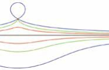
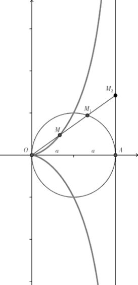

数海拾贝5
蚌线是满足方程(x-b)2(x2 + y2)-a2*x2 = 0 的解，它的形状很像海蚌的外壳(下图)。图中红点是固定点，黑线是固定线。红、绿、蓝三对曲线都满足蚌线方程。蚌线的几何含义是从固定点到固定线上任何一点的距离d等于常数。对应一个给定的d值有两套实数解，也就是两条曲线。蓝色曲线是d值大于固定点到固定线的距离的情况，所以上面的蓝线在固定点处作环状。绿线是d等于固定点与固定线的距离，红线是d小于该距离的情况。

蚌线被用来在读尺(也就是利用有刻度的尺子)的条件下解决一些尺规作图无法解决的几何问题，如锐角的三等分和二倍立方。在西方古代建筑中，蚌线常常用来制作立柱的截面以增加美观和灵动感。
蔓叶线对应的方程为y2=x3/(2a-x)，其中a是常数。在半径为a的圆的一点A作一条切线，从原点O(OA为该圆的直径)作任意直线OM2。该直线交圆于M1。所有满足线段OM=M1M2的点M都在蔓叶线上。顾名思义，蔓叶线的形状很像藤蔓的叶子。
